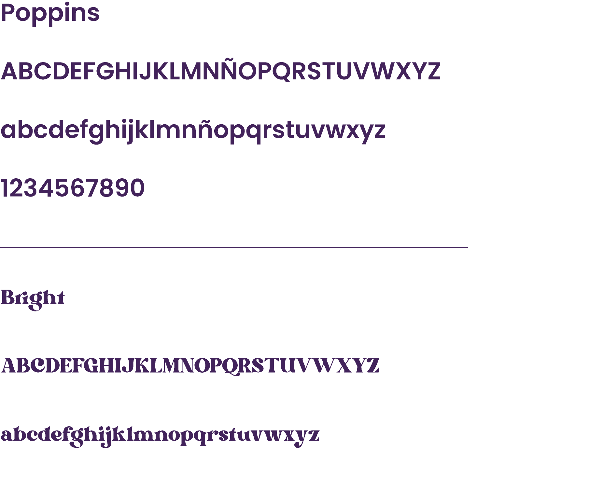
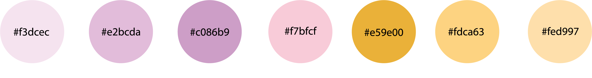

Tipografía
Se utilizaron 2 tipografías a lo largo del sitio web:

Paleta de Colores
Para la paleta de colores del sitio web me inspiré en los colores de el entorno y figura de Angélica. Quise que el sitio represente de alguna forma al personaje y a su historia para no perder la esencia del emprendimiento.

Morfología
Como se puede observar en cada uno de los wireframes y en como se maquetó el sitio, quise crear un sistema que equilibre el sitio tanto en las cajas de texto como en los colores y las imagenes. En cada página del sitio se crea un juego que se repite de alguna forma en todas las demás páginas. Se utilizaron imagenes y texto a fin de entretener a los lectores.